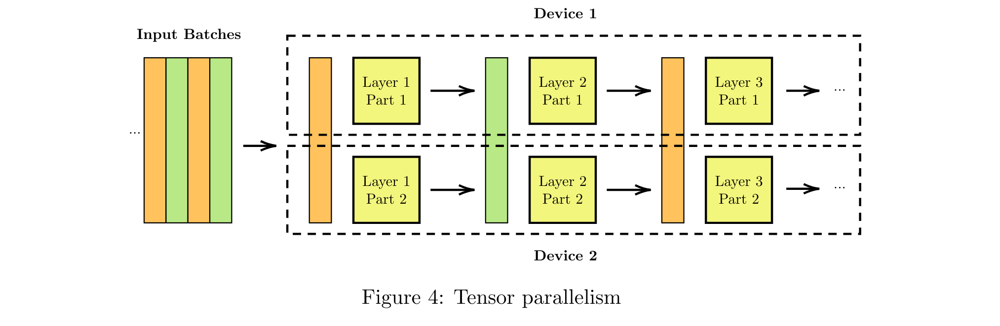

The last year at ENS de Lyon consists in a specific training to computer science research, composed of 2 long internships (6 monthes). For the first half of this year, I chose to work as a research intern at Inria Bordeaux in the TOPAL team (HPC).
TOPAL team has an expert knowledge in high performance scheduling for mathematical operations, with a group of researchers interested in the scheduling of AI algorithms. My aim during this internship was to study the particular case of the scheduling of decoder-only transformers (e.g. GPT-2) with a high performance scheduling tool called StarPU, developped at Inria Bordeaux.
Transformers as introduced in the paper Attention is All you Need are composed of 2 distinct parts: an encoder that processes the input sequence to generate contextualized
representations, and a decoder that generates the output sequence based on these representations. However, in language generation tasks, generated token depends only on the previous tokens, eliminating the need for an encoder to process the entire input sequence.
Note
OpenAI's GPT and Meta's Llama models are based on a decoder-only transformer structure.
A decoder-only transformer is composed of several parts described in Figure 1.
The first element of this block is the tokenizer, which transforms the text sequence into small pieces of information called tokens. Then, an embedding is computed to transform the text into numerical vectors. The embedding usually has good properties: if two words have a close meaning, the distance between their corresponding vector representation should be small. Modern networks also include at this step a positionnal encoding to keep track of the position of the token inside the sequence, considering that the meaning of a piece of text depends on its position in the text.
The next part of the transformer structure is the multi-head self-attention layer. It splits the input into multiple “attention heads”, each performing scaled dot-product attention independently, enabling the model to capture diverse relationships and patterns in the data. Each attention head interprets its input vector as a query, key, value (Q, K, V) tuple in order to extract context- specific information by weighting V by an attention score computed using Q and K.
This attention block is followed by a feed-forward network. The combination of the attention block and the feed-forward network is a Transformer Block, which is repeated N times to constitute the whole network. At the end of the network, linear and softmax layers are used to extract the output, which is usually a probability vector.
Because of the complexity of deep neural networks execution, finding an optimal scheduling for these tasks is a very active research question. A particular case of this pronlem targets distributed environments, which allow higher-scale computing capabilities but require a special attention at optimizing communication costs.
A first strategy used to train DNNs on a distributed environment is Data Parallelism, illustrated in Figure 2. This method consists in splitting the input in several batces, and run an entire step for a given batch on each device in parallel. Weights are then gathered to compute the model update that should stay the same in each device.
Note
Distributed Data Parallelism (DDP) is the default strategy used by pytorch to run distributed training accross several devices like GPUs.
Another parallelism strategy is Pipeline Parallelism, described in Figure 3. Here, each device is in charge of executing one layer of the network for a given input batch. In this mode, the execution of layer for a given batch cannot be executed before the execution of layer on this batch. Training also adds as dependencies the backward pass for previous batch, resulting in complex dependencies between pipeline tasks.

A third popular strategy is Tensor Parallelism, described in Figure 4. The idea of this strategy is to split the layers in several devices and compute for each layer of the network part of the result in each device. This approach is the more complex to implement because it involves complex dependencies for each split operation.
Task-based parallelism
My work focused on another strategy, called task-based parallelism, described in the next session.
Previous strategies consider the scheduling problem as a global problem. Indeed, in previous approaches, scheduling is thought at the scale of the network. Another approach, referred to as task-based parallelism, consists in submitting atomic tasks for operations on small pieces of input and then use an external engine to schedule the tasks.
This approach can be achieved by using a tool such as StarPU, which provides an API to declare atomic operations, and allow their execution thanks to high-performance scheduling algorithms written by experts.
In order to study the execution of deep neural networks with a task-based parallelism strategy, I used the project NNTile as a starting point for my work. NNTile is a deep learning library where each atomic operation (Add, GEMM, ReLU, copy, transpose...) is considered as a StarPU task which is submitted to StarPU's scheduler when the network is executed.
Achieving high performance scheduling with a task-based parallelism strategy is quite a challenge because the scheduling is done without any global knowledge about the tasks to execute. However, some factors like task granularity, kernel fusion or communication overhead can be adjusted and have turned out to be critical in terms of performance.
As an example, kernel fusion can be used to optimize the execution of a DNN. In above picture, three tasks are submitted: GEMM, Add and ReLU. In a regular setup, the scheduler will choose how to schedule these tasks on pieces of the input. When the kernels are fused, these tasks are grouped in a single task for each piece of input, executed at once in a single computing unit. The benefits of kernel fusion are multiple: it improves data locality, reduces the cost of StarPU overhead and reduces the cost of inter-devices communications.
By following a similar process at several levels of the network, I managed to observe some speedups against NNTile's implementations. The details of my work, including experiments and pseudo-code are available in my internship report.
If you want to learn more about my work, here are some useful resources:
I am grateful to my internship supervisors Olivier Beaumont and Julia Gusak for this highly valuable opportunity, as well as the whole TOPAL team for their dedication in the follow-up of my internship.